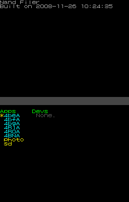
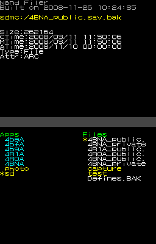
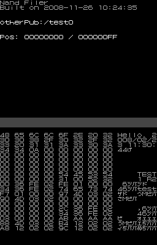
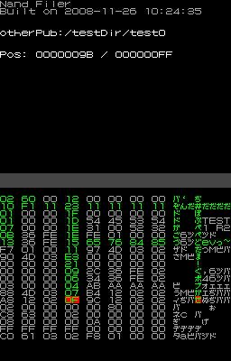

The TwlNandFiler tool manipulates data in the CTR system NAND memory (TWL region). You can use it to delete, browse, and edit photo data, as well as, DSiWare save data stored in the system NAND memory.
By using an SD card, you can also use this tool to import and export save data.
First import TwlNandFiler.cia using the Import tab of DevMenu, and then select "TWL NandFiler" to run it.
There are three modes in TwlNandFiler.
Filer mode: Lets you traverse directories and check file sizes, timestamps, and attributes.View mode: Lets you browse file contents.Edit mode: Lets you edit file contents.

The TwlNandFiler tool starts in Filer mode by default.
In Filer mode, after you select either photo data, DSiWare save data that has already been imported in the system, or SD card data, you can browse and operate on that directory tree.
When you are browsing the contents of an SD card, file and directory names will not appear if they use characters that cannot be converted to Shift_JIS.
| Button | Operation |
|---|---|
| SELECT | Displays a list of operations |
| ←→ | Switches pages for the displayed items. |
| ↑↓ | Selects files and so on. |
| A | Confirms an item. |
| B | Cancels the archive or file selection. Moves to the parent directory. |
| X | Opens a submenu when a file or archive is selected. |
This is the state immediately after startup. The left side of the screen displays links (shown in yellow) to the Game Code (shown in blue) of the installed DSiWare, and to photo data and the SD card.
Selecting a Game Code switches to archive selection in the center of the screen. Selecting a link to photo data or an SD card switches to file selection on the right side of the screen.
The following operations can be selected on the submenu displayed by pressing the X Button.
Copies files from the application's save data region or the PHOTO directory to the SD card.
A directory is created on the SD card (named either [4-digit game code_FFFF] or [PHOTO]), and then the data is copied there.
Writes photo data to the PHOTO directory, leaving the photo region with zero available memory.
This process may take several dozen seconds to complete.
Selecting a Game Code under Title Selection moves here. For Archive Selection, you can choose Public, Private, or SBanner. These are links to the public save data, private save data, and sub-banner of the DSiWare selected under Title Selection.
The following operations can be selected on the submenu that is displayed by pressing the X Button.
Backup: Backs up save data.Break: Destroys the save data region.Format: Formats the save data region or sub-banner.
However, the Backup and Break features do not exist in the sub-banner submenu.
Backs up save data on the SD card. The data backed up here can be imported using the Restore operation, described below.
Backup differs from the Export operation described above, in that the entire file system of the save data region is copied to the SD card, but with Export, data is copied in file units.
Destroys the FAT system region of the save data. This can be used for debugging when you think the DSiWare save data region may cause an error.
For more information, see TWL-SDK.
This tool can restore the destroyed save data region through any of the methods described below.
Backup before using Break and then use Restore after Break.Format (files in the save data are deleted).
Initializes the save data and sub-banner.
Restoration is possible if save data or sub-banner data becomes invalid using a break.
If PHOTO or SD have been selected under Title Selection, selecting any save data under Archive Selection moves to here.
A list of directories (yellow) and files (white) are displayed under File Selection.
When a directory is selected, press the A Button to browse the contents of that directory.
When a file is selected , press the A Button to switch to View mode.
| Size: | File size. |
| CTime: | The time the file was created. |
| MTime: | The time the file was last modified. |
| ATime: | The time the file was last accessed. |
| Attr: | File attributes: REA: Read-only files HID: Hidden files SYS: System files VOL: Volume level PRO: Protected files ARC: Archives |
| Very bottom of screen | Full path to the selected file. |
The following operations can be selected on the submenu that is displayed by pressing the X Button.
This operation is valid for directories created with the Export operation. Note, however, that exported PHOTO directories cannot be imported.
This operation copies data to the save data region of system memory. Provided the data does not exceed the size of the save data region of system memory, the data copied over by Export can be imported even if it has been altered.
Deletes a file or directory. If a directory is selected, files and directories inside the directory are deleted recursively.
This operation is only valid for save data backup files created using the Backup feature. The backup file on the SD card is imported to system NAND memory.
Note that importing backup files will fail in the cases given below.

In View mode, you can view file contents. The displayed filename and addresses are shown on the upper screen.
The content of the file (binary values and corresponding characters) is shown on the lower screen.
The following specifications apply to the display of characters.
0x00 can be replaced by 0x20 (a space).0x20 to 0x7A conform to ASCII code.| Button | Operation |
|---|---|
| ←→ | Scrolls one page at a time. |
| ↑↓ | Scrolls (one line at a time). |
| A | Switches to Edit mode. |
| B | Switches to Filer mode.If a file has been edited in Edit mode, it will be saved. |

Edit mode lets you edit files.
Take note of the following restrictions.
This state occurs when entering Edit mode.
| Button | Operation |
|---|---|
| ←→↑↓ | Moves the cursor |
| A | Switches to the editing state |
| B | Switches to View mode |
| Button | Operation |
|---|---|
| ←→↑↓ | Moves the cursor. |
| B | Switches to the non-editing state |
| L, R | Increase, Decrease value |
Pressing the L or R Buttons in the editing state will change the value at the current cursor position.
Locations where any edits have been made will appear in green. The cursor can be moved freely even in the editing state, but the horizontal range of movement is reduced compared to the non-editing state.
To save edits, select Yes from the choices displayed when you press the B Button in View mode.
CONFIDENTIAL